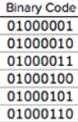
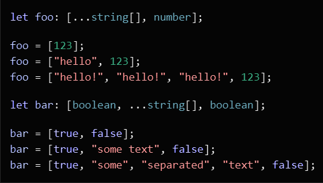
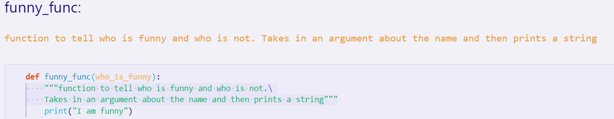
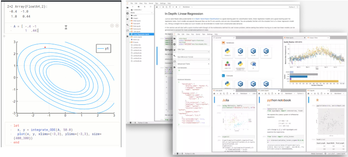
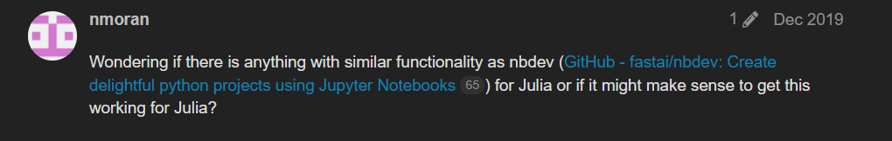

Code
def funny_func(who_is_funny):
print("I am funny")Satyabrata pal
January 5, 2022
Litrerate programming is a term coined by Donald_Knuth. Under this programming paradigm, one would write human redeable code documentation writing code.
You all know that whatever instructions we give to the computer, it “percieves” it in the following way
Oops! I got carried away.. It looks more like this

So, for a computer it’s all binary number. So, what is this that we write when we say that we are writing a computer program ?

Some of you will say this is a programming language, but I ask why it’s called a “language” ? Well! if you ask me I would say that it’s a language and like every other language that exists, it’s sole purpose is to enable communication, share stories, share thoughts. Not to a machine but to another human, that’s why it’s called a programming “language”.
Ultimately this programming instructions get’s converted into machine code but if this piece of code which when I show to a fellow human then that person would know what instructions I want to give a computer. See! that’s communication…that’s what languages do.
So, in short we invented programming languages for communicating our thoughts to another person, our thoughts about what we want a machine to do and that’s why we want the programming or coding to be as clear and as human readable as possible.
Usually we write code the folowing way
Over here the function is self explanatory but to make it extra clear for your friend, you might include an elaborate comment like this
You can insert as much elaborate documentation as you may wish. All is well till now.
But wait! what would happen when you have thousands of lines of code? Unsurprisengly there would be thousands of lines of documentation on top of that which makes it difficult for a clear communication of your thoughts via that piece of code. Not only this, in all possibilities, you will also end up writing a separate detailed documentation explaining your code.
This is the problem that literate programming tries to solve. Under literate programming paradigm you write documentation containing code like this.

In the above example, you can see that the document contains an heading which is the name of the function followed by a description of what the function is all about then that is followed by the code itself.
If I were to show this code document to you then you could easily understand what the code is all about and at teh same time you would also appreciate the “lengthy document free” code. This in short is what a literate programming style would look like.
To implement a literate programming style you would need special tools. These tools come under the umbrella of literate programming tools, which read through your document, separate out the code and the documentations and put the code in a source code file and the documentation in a text file.
While talking about literate programming tools, one can not ignore the role of “notebooks” in making it easier for developers to write literate programs. Notebooks are web based interactive computing platforms that let’s you write text and code in a web based editor and let’s you execute your code interactively.

Two of the notable notebooks are Jupyter notebooks and Pluto.jl. Both of these projects differ in their behaviour and the extent of languages they support but both of these projects have a common goal, that is to provide developers with a web based literate programming and exploratory platform. With these projects you can write your documentation and code in the same notebook, interactively execute your code and also share that across as a reproducible environment.
Due to the very nature of these notebooks projects, they provide a very good foundation of a literate programming environment and using this foundation, Jeremy howard announced the creation of Nbdev. At a very high level Nbdev is a system that let’s you write your python code and documentation in jupyter notebook and then generates source code files and the related documentation for your project among other things. However, this is a very lazy explanation of Nbdev. So, I suggest you to read the original launch blog and the documentation to truly appreciate the capabilities of Nbdev.
The original Nbdev supports the creation of Python projects from a jupyter notebook and it does really superb job at that but there is another popular language ecosystem and notebook environment which the original nbdev doesn’t support. That language is Julia and the notebook environment is Pluto.jl.
Pluto is a reactive notebook environment and differs from jupyter notebook environment in many ways. I would suggest you to explore the project Readme to get an idea about teh awsomeness of Pluto.
Pluto is a great exploratory developement platform and really love using it for my Julia project. I love Julia and python equally 😉 and I am big fan of Nbdev (python version) and use it extensively when I am developing projects in python. I always wanted a literate programming tool similar to Nbdev for Pluto/julia and while searching through the Julia forums found this discussion –>

Scrolling down the discussion thread I could see that lot many folks were also in search of something similar. This is when I decided to do something in this direction and started working on porting Nbdev to Julia.
Last month I released the alpha version of Nbdev.jl. With Nbdev.jl I hope to work towards building a developer tool which would do justice to the awesome user experience that is provided by the original Nbdev.
This is just the begining and there are lots of things that I need to fix and many things which are yet to come to Nbdev.jl. However, if you would like to take Nbdev.jl for a spin then follow the getting started tutorial [here])(https://sapal6.github.io/Nbdev.jl/tutorial/).
If you want to take part in the twitter discussion then hope onto this thread –>
I am happy to announce that I have released the Alpha version of Nbdev.jl (port of @fastdotai 's Nbdev to #julialang ) . Follow the tutorial - https://t.co/BwLlUPw9KQ to start experimenting with Nbdev.
— Satyabrata pal (@TheCodingProjec) December 27, 2021
A short 🧵 on my thoughts 👇.